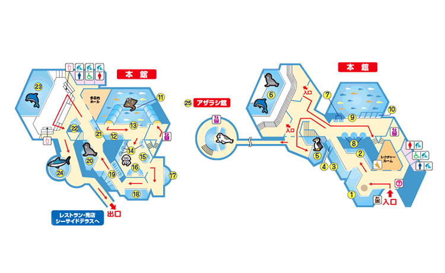
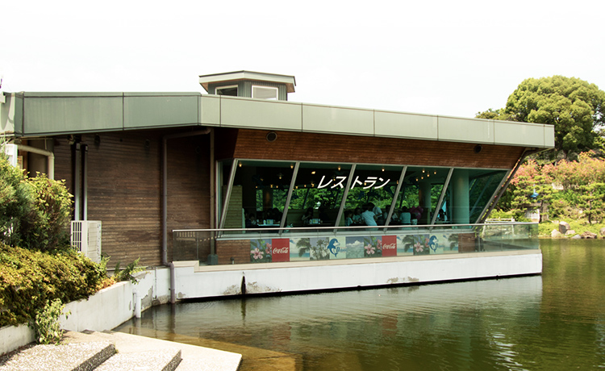
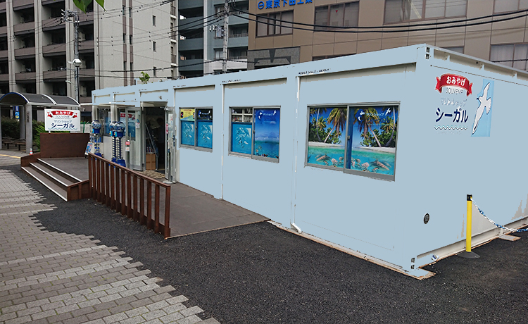

レストランドルフィン
"水に浮かぶ、6角形の建物がひときわ目をひくレストラン。テラスもあり、軽い食事や飲み物を楽しみながらゆっくりおくつろぎいただけます。レストランの営業時間は季節によって変わります。詳しくは、直接レストランドルフィンまでお問合せください。" (tel:03-1234-1234)
- 4月～11月の期間
- 営業時間 11:00～19:00（ラストオーダー18:30） ご予約受付 15:00～18:30
- 12月～3月の期間
- 営業時間 11:00～18:00（ラストオーダー17:30） ご予約受付 15:00～17:30
※土・日・祭日および春休み・GW・夏休みの期間は予約を承れません。
詳しく見る

マリンショップ「シーガル」
"海の生物にちなんだ様々なグッズや、ここでしか手に入らないしながわ水族館のオリジナルグッズまで豊富に取り揃えています。" (tel:03-1234-5678)
しながわ区民公園改修工事に伴い、2019年5月8日（水）よりマリンショップ「シーガル」は水族館口にて仮設店舗での営業となります。お客様にはご迷惑をおかけいたしますが、何卒ご理解ご協力をお願い申しあげます。